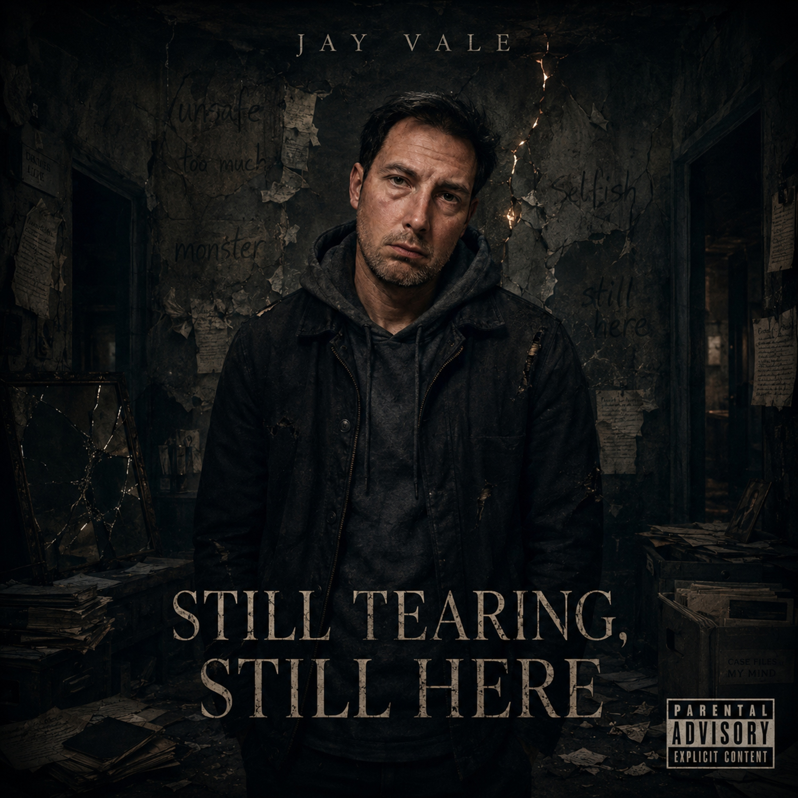

01
Still Tearing, Still Here — Intro
A spoken survival disclaimer. Not perfect. Not clean. A direct opening for anyone who already gave up inside but is still breathing.
Upcoming album
A dark cinematic album about the storm of giving up, setting dates for the exit, and fighting the part of yourself that already tried to leave.
This album is not written after the storm. It is written from the middle of the moment where giving up became organized, where dates were set, letters were written, and the mind started preparing for an ending while another part of me was still screaming, not yet.

The album
Still Tearing, Still Here is the new Jay Vale album under Heartship Records. It is a dark cinematic project about the moment giving up stopped being just a thought and became a plan, a calendar, a deadline and a conflict inside myself.
The album moves through the preparation stage of the mind: the letters, the silence, the strange calm, the clean little lie of making everything look controlled while the inside is already saying goodbye.
But this is not a celebration of leaving. It is the sound of the argument before the door. One part of me had accepted the exit. Another part kept fighting, delaying, questioning, renegotiating and trying to find one reason to stay.
Still Tearing does not mean crying. It means ripping. Splitting. Being pulled apart by the part that wanted the exit and the part that still refused to disappear quietly.
Still Here is not a victory pose. It is the uncomfortable fact that even after the dates were set, even after the mind prepared for the ending, something in me was still breathing, still arguing and still asking for more time.
The sound
Planned tracklist
The final order may still change while the album is being finished. These are the songs currently shaping the world of Still Tearing, Still Here.
01
A spoken survival disclaimer. Not perfect. Not clean. A direct opening for anyone who already gave up inside but is still breathing.
02
The cold mask, the useful version, the overconfident shell, and the person hiding behind being good at surviving.
03
A deal with the dark. A calendar on the wall. A deadline that becomes less like an ending and more like a fight.
04
Not healed. Not saved. Just angry enough, tired enough and alive enough to demand another round.
05
The quiet preparation. Making pain look organized from the outside so nobody has to see how bad it got.
06
Being needed for what you do, while wondering if anyone would miss who you actually are.
07
A conversation with the old versions, the angry one, the scared one, and the voice that learned to hate itself.
08
Learning how to act human from the outside, then slowly realizing the missing thing might never have been missing.
09
A song about systems built for care, and what happens when the person asking for help becomes a file instead of a human being.
10
What happens when people point long enough, name you wrong long enough, and then act shocked when the mask starts fitting.
11
Love written down under pressure. Words left behind because some feelings are too heavy to trust to memory.
12
The rollercoaster continues. Some days are heavy. Some days are numb. But the final words are still here.
The statement
This album is not about pretending the darkness disappeared. It is about telling the truth about what happens when the mind starts preparing to leave, while the person inside it is still conflicted enough to fight.
It is not clean survival. It is not a heroic comeback. It is the sound of someone standing at the edge of their own decision, exhausted, angry, ashamed, unsure, and still saying: not yet.
Follow the release
Follow Jay Vale / Heartship Records for updates, visuals, releases, backstories and the full world behind Still Tearing, Still Here.
jay.vale.heartship@gmail.com